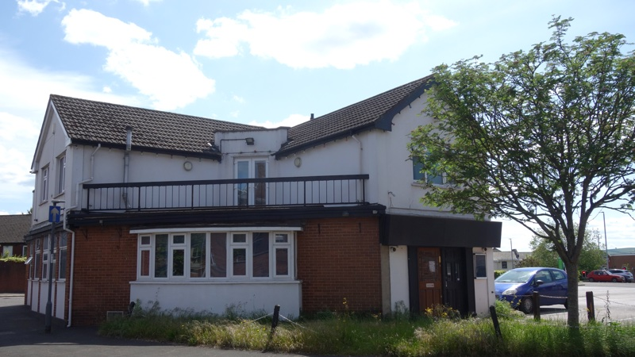
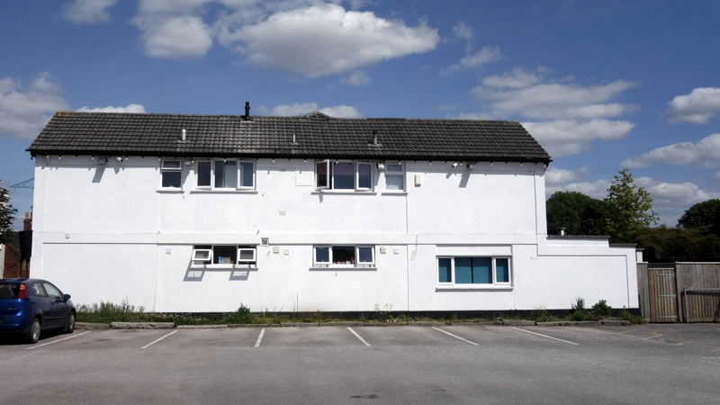

A night shelter that provides overnight accommodation for rough sleepers and homeless people in Exeter will now open all year round, following a planning decision by Exeter City Council.
The shelter, which is located inside the Magdalen Street gyratory at the head of Western Way in a building that was previously a series of bars and restaurants, has been open during the winter months since November 2018.
It will now also open from April to the end of September, when it will accommodate fourteen rough sleepers.
Its capacity is 26 during the winter, which can be increased to 40 if the council’s Severe Weather Emergency Protocol is activated, which usually happens when the temperature is forecast to fall below zero for three consecutive nights.
Dormitory style rooms on the first floor provide two or three sets of bunk beds per room, and a further eight beds are located on the ground floor.

A report to a city council planning meeting on Monday 27 April said that as the building is already converted into a night shelter and community space for homeless people, year round use would make better use of the facility.
A planning officer told the committee that opening the night shelter during the winter months would be of significant benefit to its users while only having a minor impact on the surrounding area.
He also said it would reduce deprivation, contribute to social inclusion and support the homeless and rough sleepers.
Two objections were received from local residents, expressing concerns about a potential increase of the noise and disturbance they had experienced during previous winter opening.
In a written statement Nuala O’Farrell said: “There is a lot of noise and many public disturbances each week/month, with public intoxication, loud arguments, bad language and emergency services regularly on site.
“These disturbances can be heard through closed windows and shutters/curtains. However the impact, whilst noticeable, is reduced as local residents spend most of their time inside during winter.
“These issues will be magnified through the spring/summer months, with open doors and windows and residents trying to use their outside spaces.”
Phil Bialyk, Exeter City Council leader, said that he didn’t dismiss her comments lightly but would support the recommendation to support homeless people in Exeter.
Councillor Greg Sheldon added: “It would be more of a stain on the city if we didn’t provide somewhere like this as people would have to be sleeping on the streets.”

The application to extend the shelter opening hours was approved. Conditions included the implementation of a revised management plan that requires the continuous presence of a minimum of two experienced staff on site during operating hours.
The staff are trained to work with people with complex needs and to deal effectively with challenging incidents and behaviour, and have 24 hour access to an on-call manager for support and advice.
However, speaking at the meeting Nuala O’Farrell said that the existing management plan for winter opening was not being followed, with police called out once or twice a week and only then for cases where disputes escalate and staff are unable to deal with them.
Committee members said they recognised the issues raised and stressed the importance of strict adherence to the management plan, which is delivered via a partnership between Exeter City Council and Bournemouth Churches Housing Association, which also runs Gabriel House on Smythen Street.
The shelter will now open from 6pm to 9am Monday to Friday and 6pm to 12pm on weekends and bank holidays from April to the end of September. The extended weekend hours are intended to cover a gap in provision at St Petrock’s homeless shelter, which does not open then.
A spokesperson for the city council said: “In 2018/19 a total of 188 people used the night shelter, with over 50 moving on to more suitable accommodation, preventing them from further spells of homelessness and rough sleeping.
“From October 2019 to the start of February, 100 people have accessed the night shelter.”
The virtual planning meeting at which the decision was discussed on 27 April was adjourned due to a broadband outage, and subsequently reconvened on 4 May when the decision was confirmed.